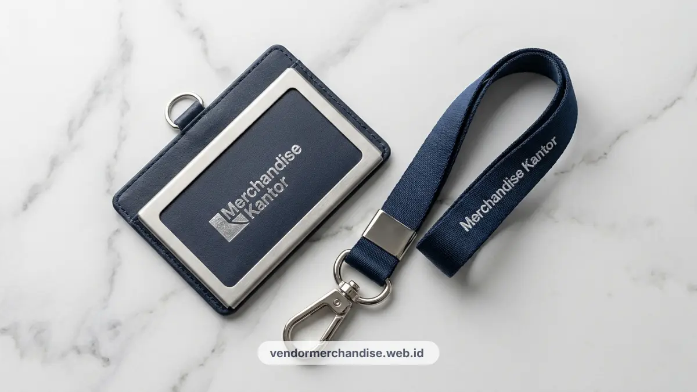

Tali identitas atau lanyard ID card merupakan salah satu kelengkapan kerja paling mendasar yang dikenakan karyawan setiap hari di area kantor. Penggunaan lanyard dengan cetak logo perusahaan yang rapi dan profesional secara efektif menjadi sarana perkenalan brand yang berkesinambungan.
Fungsi Ganda Lanyard sebagai Identitas dan Branding
Lanyard id card berfungsi ganda sebagai alat identitas akses karyawan sekaligus media branding yang terlihat setiap hari di lingkungan kantor.
Selain menahan kartu akses gedung, lanyard dengan cetak logo perusahaan turut membangun konsistensi visual di mata karyawan, tamu, maupun klien yang berkunjung ke kantor. Detail kecil seperti warna dan desain lanyard sering menjadi bagian dari identitas visual perusahaan yang konsisten dengan elemen merchandise korporat lainnya.
Material dan Finishing yang Direkomendasikan untuk Lanyard Perusahaan
Material polyester dan nylon menjadi pilihan paling umum untuk lanyard perusahaan karena daya tahan dan kenyamanan saat digunakan sehari-hari.
Polyester umumnya dipilih karena permukaannya lebih halus dan cocok untuk cetak logo dengan detail warna yang tajam. Nylon lebih sering dipilih untuk kebutuhan yang mengutamakan daya tahan terhadap gesekan harian. Dari sisi finishing, clip metal dan safety buckle menjadi dua komponen tambahan yang umum digunakan agar lanyard lebih aman dan nyaman dipakai dalam aktivitas kerja sehari-hari.

Kombinasi Warna dengan Corporate Identity
Warna lanyard sebaiknya mengikuti palet warna resmi perusahaan agar konsisten dengan elemen identitas visual lain seperti kop surat, seragam, atau signage kantor.
Beberapa perusahaan memilih kombinasi warna dasar brand dengan aksen warna kedua untuk membedakan lanyard karyawan tetap, karyawan kontrak, dan tamu. Pendekatan ini membantu memudahkan identifikasi visual sekaligus tetap menjaga kesan profesional pada seluruh lanyard yang digunakan di lingkungan kantor.
Estimasi Waktu Produksi Lanyard Custom Logo
Estimasi waktu produksi lanyard custom logo umumnya dipengaruhi oleh jumlah pemesanan, kompleksitas desain, dan ketersediaan bahan baku pada saat pemesanan dilakukan.
Pemesanan dalam jumlah besar dengan desain sederhana biasanya dapat diproses lebih cepat dibandingkan desain dengan banyak warna atau detail cetak khusus. Perusahaan disarankan mengonfirmasi estimasi waktu produksi secara tertulis kepada vendor sebelum menetapkan tanggal kebutuhan, terutama apabila lanyard akan digunakan untuk acara atau tanggal mulai kerja karyawan baru yang sudah ditentukan.
Kebutuhan lanyard ini juga dapat dilengkapi dengan kategori merchandise lain yang dibahas pada artikel pilar paket merchandise kantor eksklusif untuk klien korporat Jakarta.

Pesan Lanyard ID Card Custom Logo Sekarang
Perkuat identitas visual perusahaan Anda melalui lanyard id card custom logo dari Vendor Merchandise Kantor. Tim kami siap membantu menentukan material, warna, dan estimasi waktu produksi sesuai kebutuhan kantor Anda di Jakarta. Hubungi Vendor Merchandise Kantor sekarang untuk konsultasi desain dan penawaran harga lanyard perusahaan.